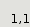

The GTK2.Table allows the programmer to arrange widgets in rows and
columns, making it easy to align many widgets next to each other,
horizontally and vertically.
GTK2.Table(2,2,0)->attach_defaults( GTK2.Label("0,0"), 0, 1, 0, 1)->attach_defaults( GTK2.Label("0,1"), 0, 1, 1, 2)->attach_defaults( GTK2.Label("1,0"), 1, 2, 0, 1)->attach_defaults( GTK2.Label("1,1"), 1, 2, 1, 2)->set_col_spacings(10)->set_row_spacings(10)

GTK2.Table(2,2,0)->attach_defaults( GTK2.Label("0,0-1,0"), 0, 2, 0, 1)->attach_defaults( GTK2.Label("0,1"), 0, 1, 1, 2)->attach_defaults( GTK2.Label("1,1"), 1, 2, 1, 2)->set_col_spacings(10)->set_row_spacings(10)

Properties:
int column-spacing
int homogeneous
int n-columns
int n-rows
int row-spacing
Child properties:
int bottom-attach
int left-attach
int right-attach
int top-attach
int x-options
int x-padding
int y-options
int y-padding
 GTK2.SyntaxTag()->create()
GTK2.SyntaxTag()->create()